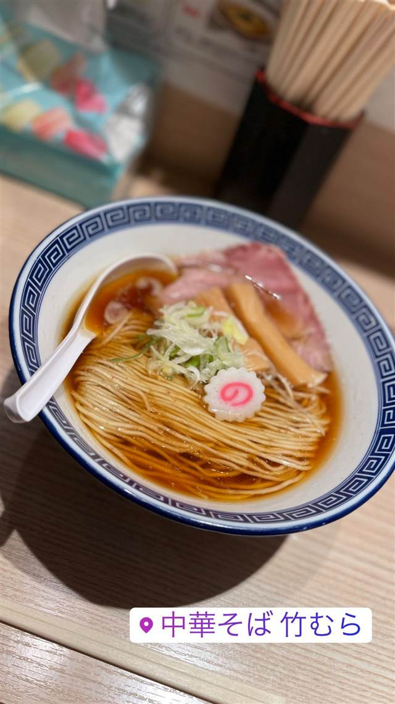
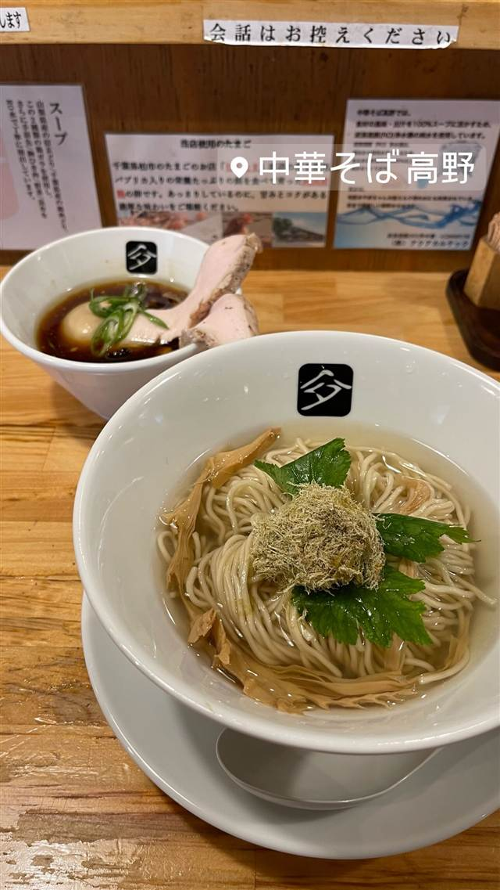
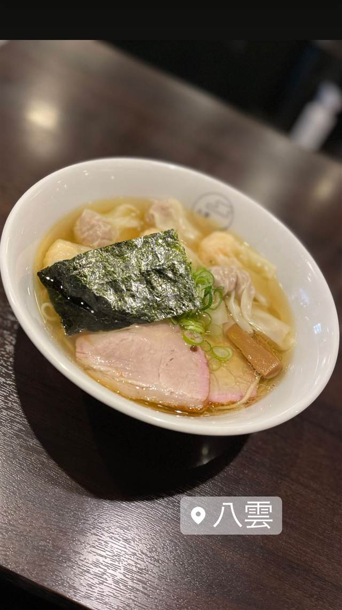
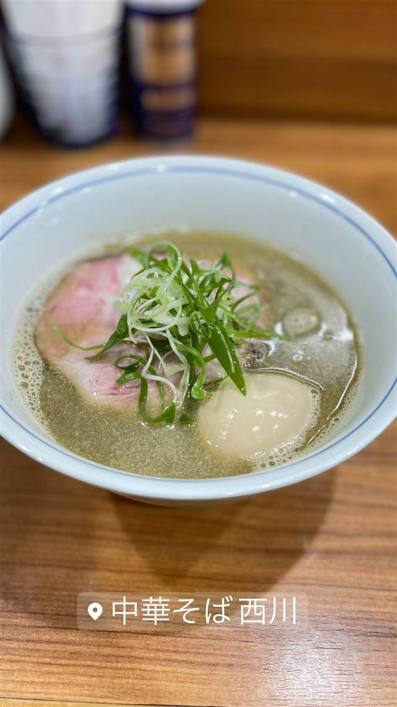
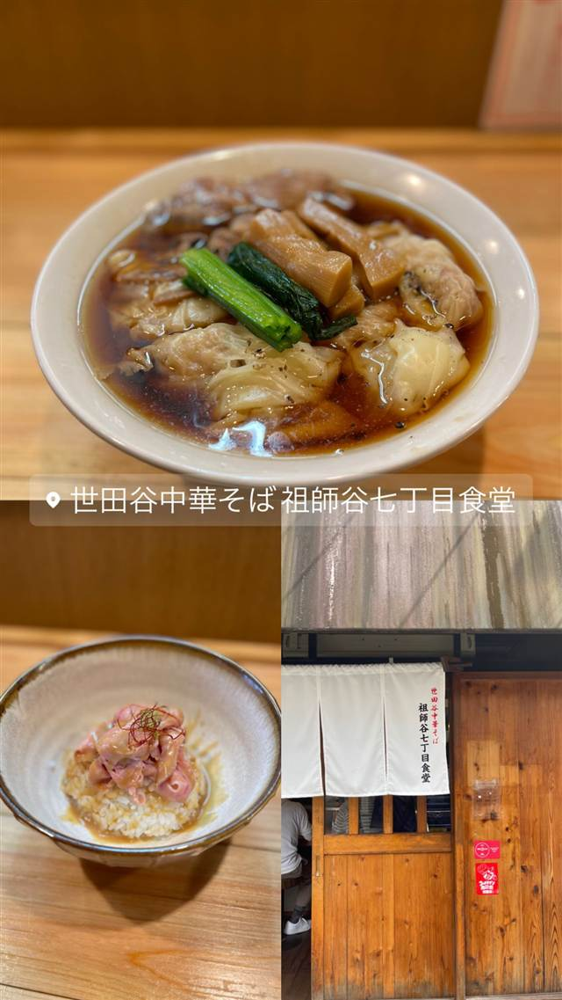
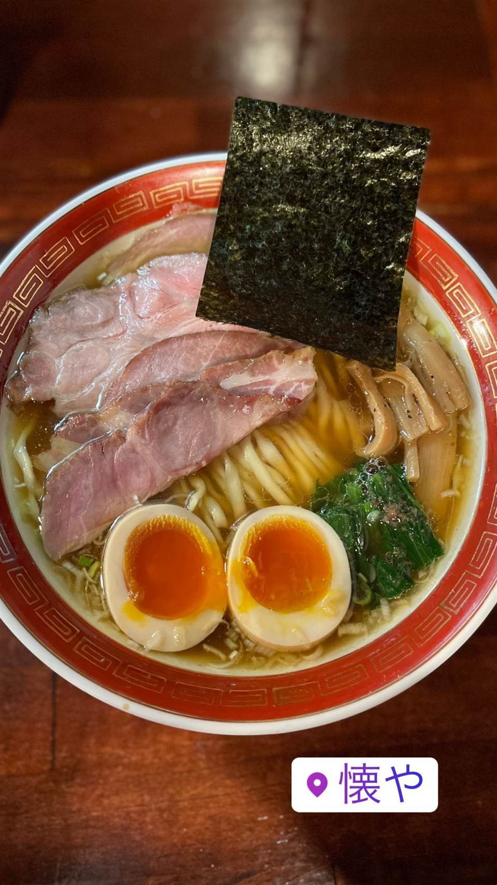

中華そば 竹むら
大山鶏と水を10時間炊き上げたパイウォーターの中華そば
中華そば 竹むら
練馬の人気店「中華そば ます田」の系列2号店として2018年に目黒・権之助坂にオープン。大山鶏と水にこだわり10時間炊き上げたスープと自家製麺で、昔ながらの中華そばを現代的に仕立てている。
TRIVIA
豆知識
- 練馬の人気店「ます田」系列の2号店として誕生。
- スープに『生命の水』とも呼ばれるパイウォーターを使用している。
REVIEWS
世間の評判
92.1ラーメンDB
パツパツ細麺と鶏の効いた醤油
- 歯切れの良いパツパツ細麺と鶏の効いた醤油スープを評価する声が多い
- 家系寄りのメニューは上品だがカスタマイズの楽しみが乏しいという声もある
- 中華そばは後味にやや独特なクセが残り好みが分かれると感じる人もいる
- 卓上調味料にニンニクがなく好みで味変しにくい点を惜しむ声もある
ラーメンデータベース 口コミ114件・最新 2026-08
| 創業 | 2018年11月開業 |
|---|---|
| 系譜 | 練馬の人気店「中華そば ます田」を営む会社による2店舗目のラーメン店。 |
| 看板 | 「大山鶏と水」をコンセプトにした中華そば |
| こだわり | 大山鶏と真昆布・干し椎茸の出汁を10時間かけて炊き上げたスープに、パイウォーターを使用。麺は全粒粉の細麺と厳選小麦の熟成多加水麺の2種を提供。 |
| どこから | 都心 |
| 営業時間 | 月〜土 11:00-01:30 日 11:00-22:30 |
| 予算 | 昼 ～¥999 夜 ～¥999 |
| 場所 | 目黒駅 東京都目黒区下目黒（権之助坂） |
| メモ | 目黒駅から徒歩4分、権之助坂沿い。 |
食べたもの：中華そば
NEARBY
近い店・同じ系統の店
-

★ 醤油・中華そば 大口駅 中華そば 髙野 元美容師の店主が作る、昆布水に浸した自家製麺の中華そば 昼 ¥1,000～¥1,999 夜 ¥1,000～¥1,999 -

★ 醤油・中華そば 池尻大橋駅 八雲（やくも） 骨を一切使わないのに深いコクの特製ワンタン麺 昼 ¥501～¥1,000 夜 ¥501～¥1,000 -
 ★
醤油・中華そば 六本木駅
入鹿TOKYO 六本木店
鶏・豚・貝・海老を別々に炊く独自のカルテットスープ
昼 ¥1,000～¥1,999 夜 ¥1,000～¥1,999
★
醤油・中華そば 六本木駅
入鹿TOKYO 六本木店
鶏・豚・貝・海老を別々に炊く独自のカルテットスープ
昼 ¥1,000～¥1,999 夜 ¥1,000～¥1,999
-

★ 醤油・中華そば 千歳船橋 中華そば 西川 永福町大勝軒などで8年修行した店主の煮干しそば、百名店5年連続 昼 ¥1,000～¥1,999 夜 ¥1,000～¥1,999 -

★ 醤油・中華そば 祖師ヶ谷大蔵駅 世田谷中華そば 祖師谷七丁目食堂 柴崎亭店主が手がける、煮干しと小豆島醤油の中華そば 昼 ～¥999 夜 ～¥999 -

★ 醤油・中華そば 鷺沼 麺処 懐や 中村屋仕込み、一度に2杯しか作らない淡麗系 昼 ～¥999